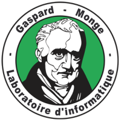
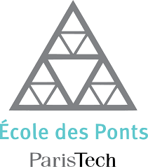

Summary¶
Summary I am a PhD student at the École des Ponts in the computer vision team IMAGINE (LIGM, École des Ponts, Univ Gustave Eiffel, CNRS) and at the IGN—the French Mapping Agency—in the machine learning team STRUDEL (LASTIG, Univ Gustave Eiffel, IGN/ENSG), advised by Mathieu Aubry and Loïc Landrieu. I am interested in optimisation and machine learning for 3D data, with a focus on unsupervised learning, interpretability, and real-time applications.
Supervisors¶
- Mathieu Aubry (LIGM, Ecole des Ponts, Univ Gustave Eiffel, CNRS, France)
- Loïc Landrieu (Univ Paris-Est, IGN-ENSG, LaSTIG, STRUDEL, Saint-Mandé, France)
Publications¶
Damien Robert, Tom Monnier, Mathieu Aubry, Loïc Landrieu
Paper | Webpage | Code | Slides | Long video | Short video
We characterize 3D shapes as affine transformations of linear families learned without supervision, and showcase its advantages on large shape collections.
This work is an extension of the Deep Transformation-Invariant Clustering framework from Tom Monnier et al. for 3D tasks such as clustering and few-shot segmentation.
Short CV¶
| 2020-now | PhD student on "Semantic segmentation of dynamic 3D point clouds" supervised by Mathieu Aubry and Loic Landrieu. |
| Summer 2019 | Research project on generative adversarial network for MRI spine labelling at GE Healthcare supervised by Mathieu Aubry. |
| 2018-2019 | Mathematics, Vision and Learning (MVA) master of the ENS-Cachan & engineering program of Ecole des Ponts ParisTech. |
| Summer 2018 | Research project on the semantic segmentation of 3D point clouds using deep learning at Bentley Systems with Renaud Keriven. |
| 2015-2018 | Master in Computer science and biology at the Ecole polytechnique. |
Affiliations¶


- 


- 